Kettle是一款开源的ETL工具，纯Java编写，工作中经常用到一些转换，特此记录。
如果历史数据需要大批量回刷，按照时间段跑数据，动辄几亿甚至千亿的数据操作会造成数据库断连，Select的时间可以达到十几分钟，按日跑需要不断地进行改参数，循环脚本可解决
job中对ETL参数做初始设置：
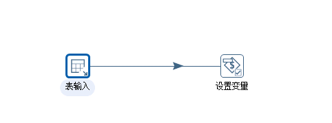
select to_number(to_char(date('20210731'),'yyyymmdd')) as p_sysdate_num,
to_number(to_char(etl_date,'yyyymmdd')) as p_etl_date_num,
to_char(etl_date,'yyyymmdd') as p_etl_date
from tmp.etl_incremental
ETL日期经过转换，到字段检验
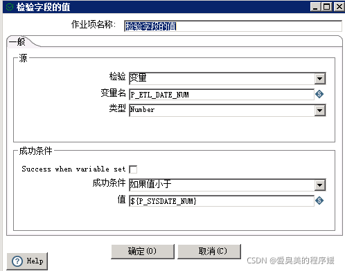
如果值小于设置的结束日期，进入循环。
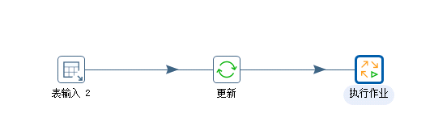
select jobname, trans_name, table_name, etl_frequency,
etl_date+1 as p_next_etl_date
from tmp.etl_incremental
对ETL日期更新，更新之后执行转换。
在job中连线闭环，通过【检验字段的值】判断结束循环，该方式较一，出现问题容易导致kettle崩溃。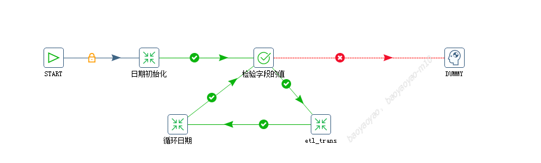
在日期初始化中设置开始日期和结束日期，设置变量中参数需大写
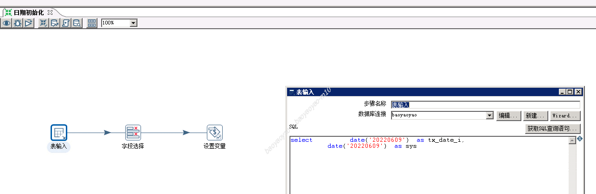
设置变量后在job和转换中均可以通过${参数}使用
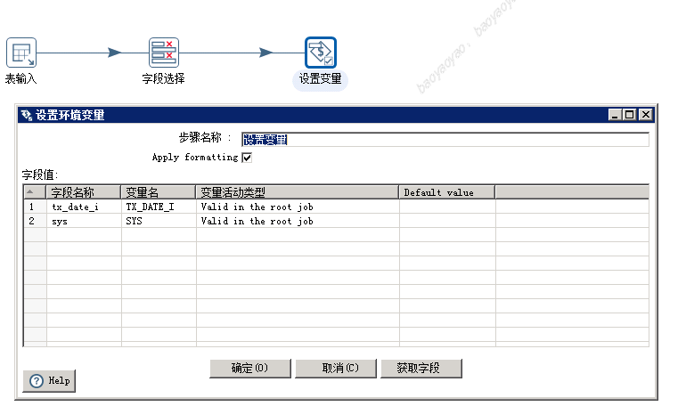
表输入中对日期进行增量处理，赋值给变量
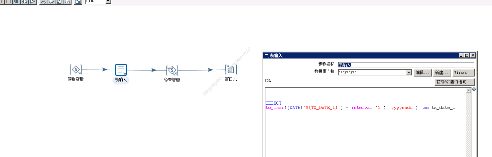
这一步是sql执行脚本，在trans属性的命名参数中可增加常量参数。
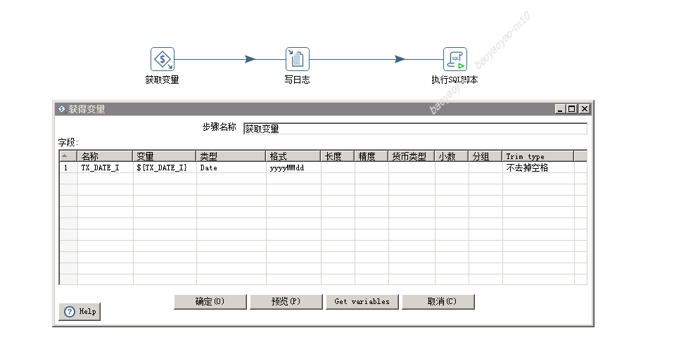
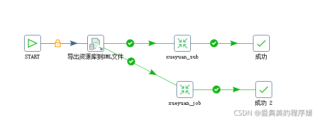
资源导出成xml文件
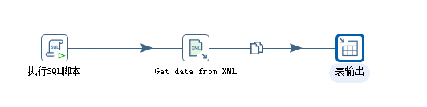
从xml中获取到步骤和转换，转换和转换，作业和转换之间的关系，方便追踪血缘关系，为下一步数据治理打好基础。
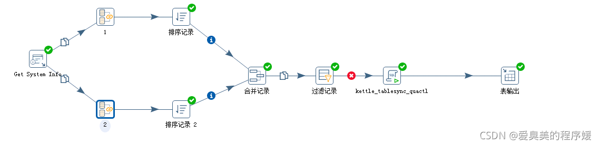
ETL同步在实际过程中，往往会遇见上游回刷，每日监控同步数据量及重要指标